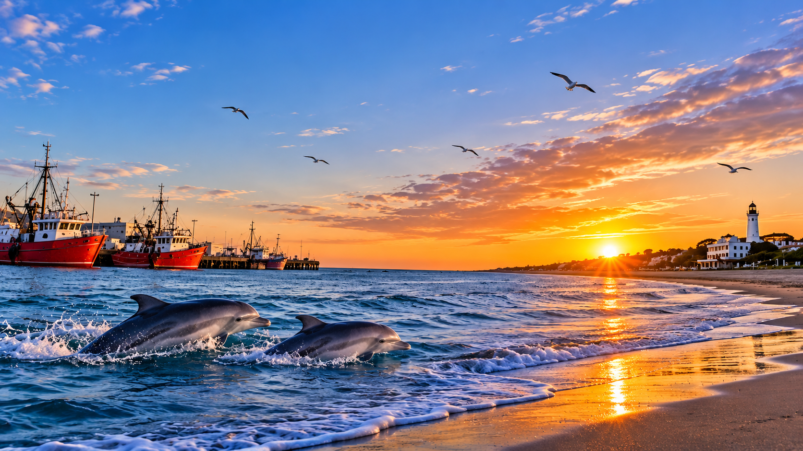
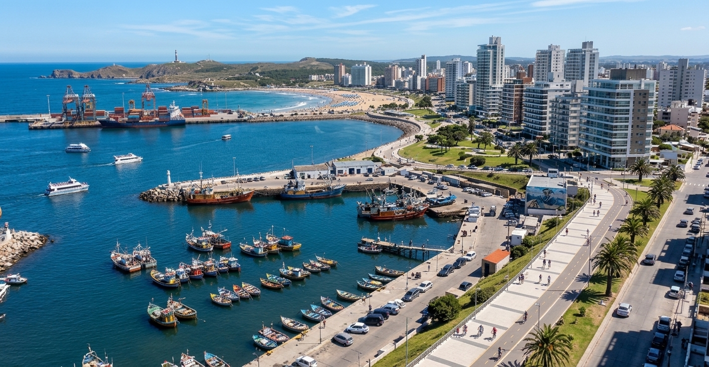
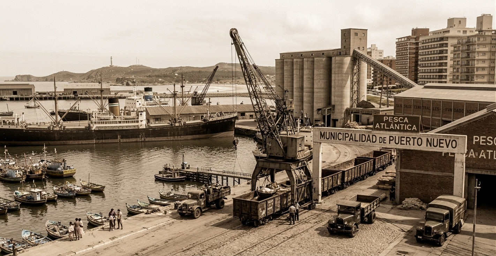
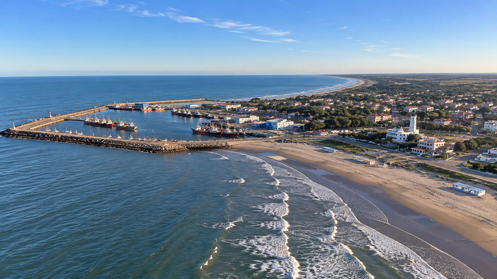

Puerto Nuevo : Historia, Identidad y Comunidad
Puerto Nuevo es una ciudad balnearia ubicada en la costa atlántica de la Provincia de Buenos Aires. Fundada en 1874, combina playas, tradición pesquera, cultura y naturaleza, destacándose por sus toninas overas y su puerto pesquero.

Historia y Orígenes

Fundación y Primeros Asentamientos
Fundada en 1874 gracias a la visión de pioneros que apostaron por el crecimiento de la región. En sus inicios funcionó como un modesto poblado pesquero que creció rápidamente con la llegada de familias inmigrantes que moldearon su identidad comunitaria.

Desarrollo Marítimo e Industrial
A mediados del siglo XX, la ciudad transformó su infraestructura portuaria, convirtiéndose en un punto estratégico para el comercio regional y la actividad pesquera de la costa atlántica bonaerense.
Geografía y Entorno Natural
La ciudad se extiende a lo largo de 45 kilómetros de costa marina, rodeada por reservas naturales protegidas, amplias playas y áreas de acantilados ideales para el avistaje de fauna local.

45 km de costaInformación General y Demográfica
| Indicador | Detalle / Valor |
|---|---|
| Año de Fundación | 12 de octubre de 1874 |
| Población Estimada | 125.400 habitantes |
| Superficie Total | 88,5 km² |
| Clima | Templado marítimo (media de 16 °C) |
| Atractivo Emblemático | Avistaje de toninas overas |
Tradiciones, Deportes y Vida Cultural
Puerto Nuevo se destaca por sus festejos populares, su fuerte arraigo deportivo y una gastronomía basada en productos de mar: